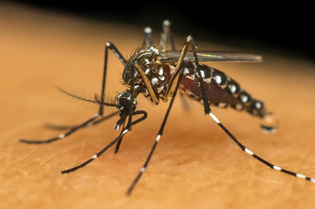

Toque na imagem para ouvir o somMosquito da Dengue (Aedes aegypti)
Sintomas em humanos e animais
Humano
- Febre alta (39 a 40º C) de início abrupto
- Dores no corpo, principalmente nas articulações
- Dor de cabeça intensa
- Manchas vermelhas pelo corpo
- Coceira
- Dor ao movimentar os olhos
- Mal estar
- Falta de apetite.
Cão
- Não há sintomas
Gato
- Não há sintomas